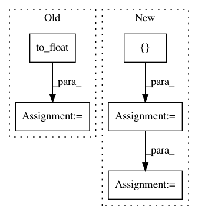

6dad66511b8432570eb53b67b8fd889913ac15e3,examples/opensets/mnist_model2.py,MyModel,_build,#MyModel#,17
Before Change
input_images = tf.placeholder("uint8", images_shape, name="input_images")
input_labels = tf.placeholder("uint8", [None], name="input_labels")
images = tf.to_float(input_images)
features = conv2d_block(images, 32, 3, layout="canp", name="layer1")
features = flatten(features)
layer1 = tf.layers.dense(features, units=512, activation=tf.nn.relu)
model_output = tf.layers.dense(layer1, units=10)
predictions = tf.identity(model_output, name="predictions")
targets = tf.one_hot(input_labels, depth=10, name="targets")
predicted_labels = tf.argmax(model_output, axis=1, name="predicted_labels")
After Change
class MyModel(TFModel):
def _build(self):
names = ["images", "labels"]
placeholders, inputs = self._make_inputs(names)
num_classes = self.num_classes("labels")
x = conv2d_block(inputs["images"], 32, 3, layout="cnap", name="layer1")
x = conv2d_block(x, 64, 3, layout="cnap", name="layer2")
In pattern: SUPERPATTERN
Frequency: 4
Non-data size: 5
Instances
Project Name: analysiscenter/batchflow
Commit Name: 6dad66511b8432570eb53b67b8fd889913ac15e3
Time: 2017-11-01
Author: rhudor@gmail.com
File Name: examples/opensets/mnist_model2.py
Class Name: MyModel
Method Name: _build
Project Name: arnomoonens/yarll
Commit Name: 564edeaf4e22c8e8d9e79ef661b24e4e8aef8c16
Time: 2018-02-19
Author: arno.moonens@outlook.com
File Name: agents/ppo.py
Class Name: PPO
Method Name: __init__
Project Name: NifTK/NiftyNet
Commit Name: 0c63b9dcd7ee3da39c74379a01d16e3a360d3506
Time: 2017-10-26
Author: wenqi.li@ucl.ac.uk
File Name: niftynet/layer/resampler.py
Class Name: ResamplerLayer
Method Name: _resample_inv_dst_weighting
Project Name: asyml/texar
Commit Name: f55217e5fee88bc38e58e62e886f79e561c4d069
Time: 2018-08-14
Author: zhitinghu@gmail.com
File Name: texar/losses/losses_utils.py
Class Name:
Method Name: reduce_batch_time